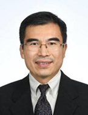
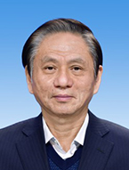

2023 International Symposium on Microphysiological Systems
（MPS 2023）
and the 6th Academic Conference and Industrial Investment Forum on Organoid and Organs-on-Chip
Home
In recent years, microphysiological systems such as organoids and organ-on-chip have found wide-ranging applications in the fields of disease research, drug development, and precision medicine, making them pivotal and sought-after technologies in numerous countries. Jointly organized by Southeast University, Jiangsu Province Hospital, Columbia University, the Institute of Sports and Health, and other institutions, the “2023 International Symposium on Microphysiological Systems (MPS 2023) and the 6th Academic Conference and Industrial Investment Forum on Organoid and Organs-on-Chip” is scheduled to take place in Nanjing, China from November 10th to 12th, 2023.
The conference aims to explore the latest research trends in microphysiological systems, including organs-on-chip, organoids, biomedical big data, and showcase the most recent research achievements. It provides a platform for academic, industry, and research collaboration in the field of microphysiological systems. Together, we aspire to advance microphysiological systems research and industrial development in China to new horizons!
General Information
Vice Chairman：Yuepu Pu (Southeast University), Wei Xie (Southeast University)，Kaiming Ye (State University of New York at Binghamton)，Danilo A. Tagle (National Institutes of Health (NIH))，Marcus Textor ( Swiss Federal Institute of Technology, ETH Zürich)
Member: Liang Chen, Pu Chen, Yong Chen, Zaozao Chen, Zhimin Fan, Qi Gu, Zhongze Gu, Di Huang, Ningping Huang, Kuirong Jiang, Xingyu Jiang, Mingxing Lei, Ling Leng, Chenzhong Li, Gang Li, Xiangning Li, Xiaohong Li, Geyu Liang, Hao Liang, Xinhua Lin, Yan Liu, Ling Lyu, Jianhua Rao, Tao Wang, Zhimin Wang, Jianzhong Xi, Chunyang Xiong, Leping Yan, Fei Yang, Jun Yang, Lihong Yin, Rong Yin, Juan Zhang, Quanshun Zhang, Bing Zhao, Chen Zhao, Xiaobing Zhou, Dan Zhu, Jiangbo Zhu
Important Dates
Conference Theme
Construction and Measurement of Organoid and Organs-on-Chip |
Organs-on-Chip and Health Risk Assessment |
Organs-on-Chip and Drug Development |
Organs-on-Chip and Precision Medicine |
|
1.3D bioprinting 2.organoid culture 3.microfluidic chip design and manufacturing 4.stem cells and tissue engineering 5.biomaterials and bio-inspired materials 6.Cell and tissue imaging 7.cellular and tissue mechanics measurement 8.biosensing materials and devices 9.biomedical big data and bioinformatics
|
1.Animal alternatives 2.Organs-on-chip and toxicology 3.Environmental Risk Assessment 4.Specialized Medicine 5.Food Safety Assessment 6.Cosmetic Safety and Efficacy Assessment |
1.High-Throughput Drug Screening with Organs-on-Chip 2.Disease Models on Organs-on-Chip 3.Drug Development with the Integration of Organs-on-Chip and Artificial Intelligence 4.Organs-on-Chip and Biomedical Regulatory Affairs |
1.Tumor Personalized Drug Sensitivity Testing on Organoids and Organs-on-Chip 2.Physiological Mechanism Research with Organs-on-Chip 3.Disease Mechanism Research with Organs-on-Chip 4.Regenerative Medicine with Organs-on-Chip 5.Translational Medicine with Organs-on-Chip |
Committee Chair
| Zhongze Gu Professor, Cheung Kong Scholars, Fellow of the American Academy of Medical and Biological Engineering, Fellow of the Royal Society of Chemistry |
|
| Yun Liu President of Jiangsu Province Hospital (the First Affiliated Hospital with Nanjing Medical University); Vice President of Nanjing Medical University; Vice Dean of School of Biomedical Engineering and Informatics, Nanjing Medical University; Director of Institute of Medical Informatics and Management, Nanjing Medical University |
|
| Kam W. Leong A member of the National Academy of Engineering, the National Academy of Inventors, the National Academy of Medicine, and the Samuel Y. Sheng Professor in the Department of Biomedical Engineering at Columbia University |
Distinguished Guests (in alphabetical order by last name)
|  | Yeguang Chen Academician of the Chinese Academy of Sciences, President of Chinese Society for Cell Biology, Editor-in-Chief of the Journal Cell Regeneration Professor Chen primarily focuses on using multidisciplinary approaches such as molecular biology, cell biology, bioinformatics, as well as organoid technology and animal models, to investigate the self-renewal and differentiation mechanisms of adult stem cells, and explore the molecular mechanisms underlying signal regulation of cell fate and the development of cancer diseases. |
|  | Xiaosong Gu Academician of the Chinese Academy of Engineering, Honorary president of Chinese Society for Anatomical Sciences, Vice president of the Chinese Society of Biomedical Engineering Professor Gu has led an active research team and made outstanding innovative achievements in the fields of tissue engineering and nerve regeneration. A series of research works by Professor Gu and his coworkers made greatly contribution to pushing China to get to the world forefront in tissue engineered nerve research and application. A report in the special section of Science (2012) indicates that his team was among the first in the world to develop nerve grafts using chitosan, a material usually derived from shrimp or crab shells, and the first to take such grafts to the clinic, and further praises Professor Gu as a “translational pioneer”. |